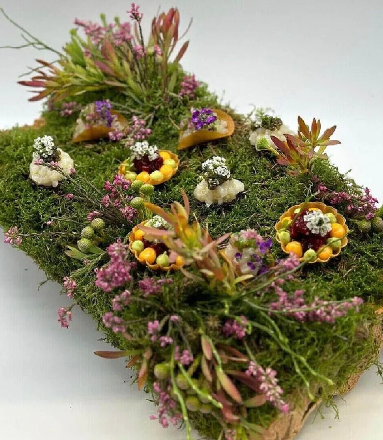

The Bakery
Bread, viennoiserie and pastry, baked fresh in London by Pedro, Alejandro's in-house baker.

Meet Pedro
Pedro is Alejandro's baker. He works alongside him on events, but bread is very much his own thing: a sourdough starter that's been going for years, and an oven that's usually on before anyone else is awake.
Beyond events, Pedro bakes bread and pastries for a number of London coffee shops, private households and hotels. We make all our bread from scratch, with the best ingredients we can get.
Enquire About BakeryBread & Viennoiserie
A rotating selection, adjusted to the season and the occasion. Pedro also runs bread-making classes and sells loaves directly, ask us for details.

Country Sourdough
48-hour fermentation, dark crust, open crumb. The daily house loaf.
Signature
Rosemary & Sea Salt Focaccia
Olive oil-rich, pillowy crumb, finished with flaked sea salt.
Table bread
Seeded Rye
Dense, nutty and slow-fermented, served alongside charcuterie and cheese.
Grazing
Charred Flatbreads
Made for canapés and mezze: thin, blistered, and baked to order.
Canapés
Celebration Hampers
Loaves, pastries and preserves, packaged as gifts for guests or clients.
GiftingBread, Wherever You Need It
Wherever Alejandro is cooking, Pedro's bread tends to be close behind.
Cooking Classes
Hands-on bread-making sessions with Pedro, for small groups or families.
Private Dining
Fresh bread as part of any private dinner Alejandro is cooking, London or further afield.
Daily Residence Services
A standing loaf and pastry order, delivered or baked on-site as part of daily service.
Events
A dedicated bread course or grazing table, styled to match the occasion.
Gala Dinners
A full bakery table alongside the main event, from loaves to petit fours.
From starter to table
01A starter that has been fed for years
The country sourdough comes from a long-established starter, fed daily and left to ferment slowly. A long, cool fermentation develops flavour, keeps the crumb open and gives the crust its depth. There are no shortcuts or additives, just flour, water, salt and time.
02Bread for the table
For dinners and events, bread is baked to match the menu: focaccia with rosemary and sea salt for a Mediterranean table, seeded rye for charcuterie and cheese, soft rolls for a seated dinner. It arrives warm and is served at the right moment rather than left sitting.
03Breakfast and viennoiserie
Butter-laminated croissants, pain au chocolat and brioche can be baked for a private household breakfast, a brunch, or a weekend away on a yacht. Laminated dough is prepared in advance and finished fresh so it reaches the table at its best.
04Canapé breads and flatbreads
Thin charred flatbreads, blini and small toasts form the base for many canapés and mezze boards. Baking them to order keeps them crisp and lets the savoury toppings from the kitchen shine.
05Gifting and celebration hampers
Loaves, pastries and preserves can be packed as gifts for guests or clients, and a hamper is a thoughtful way to follow a dinner or mark an occasion. Ask about what is available for the season.
Bakery: FAQs
Can bread be arranged with a private chef dinner?
Yes. Bread is baked to complement the menu and delivered or served as part of the event. Mention it in the enquiry form when you share the date and guest count.
Do you cater for dietary needs?
Breads can be adapted, including dairy-free options. Let us know any allergies and requirements so they are planned in from the start.
Is there regular delivery for households?
Recurring bread and pastry supply is available for private households in London. Use the enquiry form to talk through frequency and what you would like.
Do you run bread-making classes?
Pedro runs classes. Ask through the enquiry form for upcoming dates and availability.